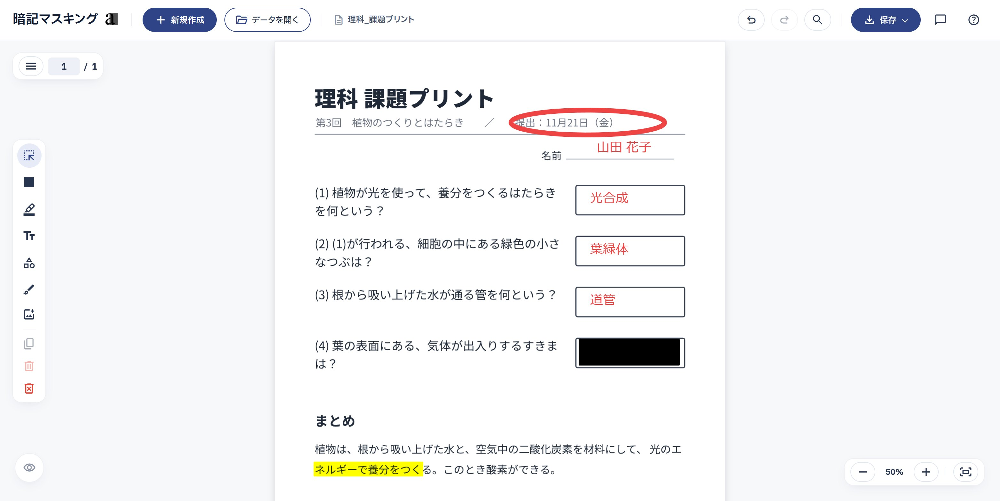

配られたPDFの課題やプリントに、答えやメモを書き込みたい。でも、そのためにソフトを入れるのは面倒。 そんなときは、ブラウザでPDFを開くだけで書き込めます。テキストの入力も、手書きも、蛍光ペンも使えます。 無料で、登録もインストールも要りません。 覚えたい所を塗って隠せば、赤シートの代わりにもなります。

書いたものは、どれも後から動かしたり、大きさを変えたり、消したりできます。 書き間違えても、元のPDFには何も残りません。
「新規作成」から、書き込みたいPDFを選びます。何ページあってもそのまま開けます。 写真で撮ったプリントでも構いません。
左に並んだ道具から、テキストやペンを選んで紙の上に書きます。 置いた位置は後から動かせます。
右上の「保存」から「PDF／画像」を選ぶと、書き込んだ状態のPDFができます。 そのまま印刷したり、課題として提出したりできます。
PDFの読み込みも、書き込みも、保存も、すべてお使いのパソコンのブラウザの中で行います。 ファイルをどこかのサーバーへ送ることはありません。 学校の課題や、人に見せたくない書類にも使えます。
書き込むだけでなく、覚えたい語句を暗記マーカーで黒く塗って隠せます。 隠した所はカーソルを合わせたときだけ見えるので、PDFがそのまま暗記シートになります。 赤シートと違って、印刷された黒い文字でも隠せます。
詳しいやり方はPDFを赤シートで隠す方法にまとめています。
| Edge（Windowsに入っている） | PDFの無料ソフト | ネットの無料ツール | 暗記マスキング | |
|---|---|---|---|---|
| 入れるもの | なし | ソフトのインストール | なし | なし |
| ファイル | パソコンの中 | パソコンの中 | 相手のサーバーへ送る | パソコンの中 |
| 書き込み | 手書き・蛍光ペン・テキスト | ソフトによる | ツールによる | テキスト（縦書きも）・手書き・蛍光ペン・図形・画像 |
| 隠して暗記 | できない | できない | できない | できる |
Windowsで、少しだけ手書きやメモを足したいなら、最初から入っているEdgeでも足ります。 縦書きで書きたい、図形や画像も置きたい、覚える所を隠したい、という人には暗記マスキングが向いています。
消えません。「PDF／画像」で保存したPDFは、書き込みがページそのものに描き込まれています。 どのPDFアプリで開いても、印刷しても、画面で見たとおりに出ます。
「PDF／画像」で保存したPDFでは、書き込んだテキストは絵として入るため、文字としては選べません。 もとのPDFにあった文字は、これまでどおり選べます。 あとで書き込みを直したいときは、「PDF（編集用）」で保存しておいてください。
書けます。テキストを選ぶと出る帯から、横書きと縦書きを切り替えられます。
使えます。配られたPDFをパソコンに保存してから開いて書き込み、「PDF／画像」で保存したPDFを課題に添付して提出してください。
開くことはできますが、今のところパソコンで使うことを想定して作っています。 細かい書き込みは、パソコンの方がやりやすいです。
かかりません。会員登録もインストールも要らず、ブラウザで開いてすぐ使えます。